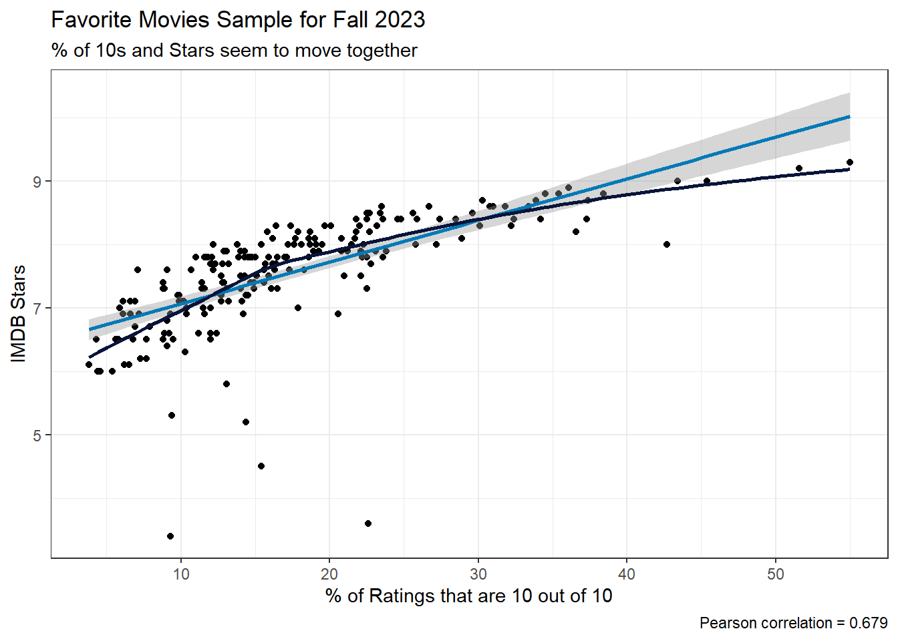
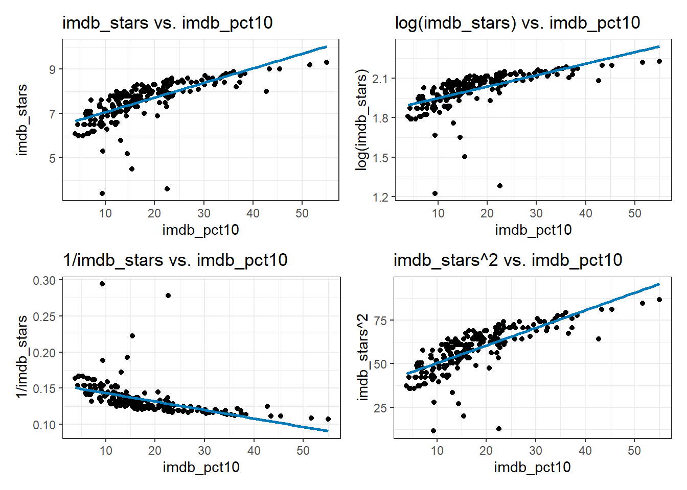
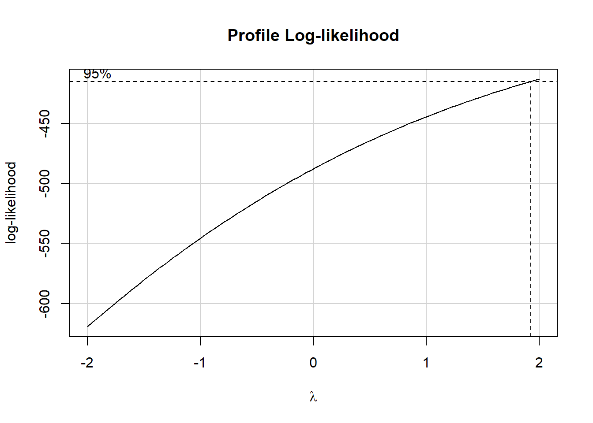
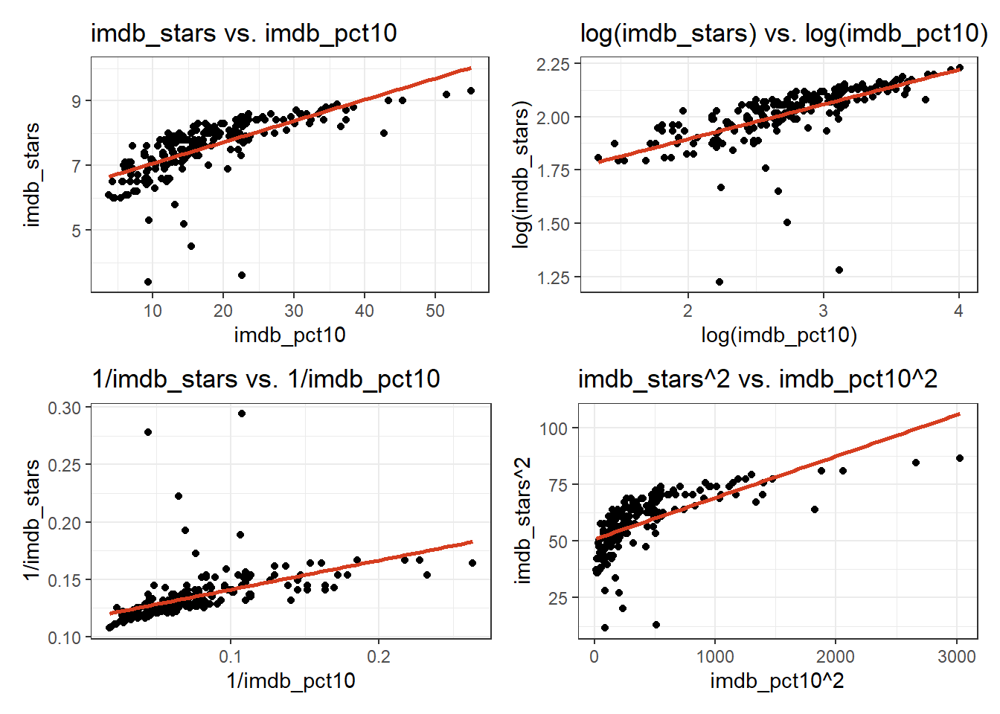
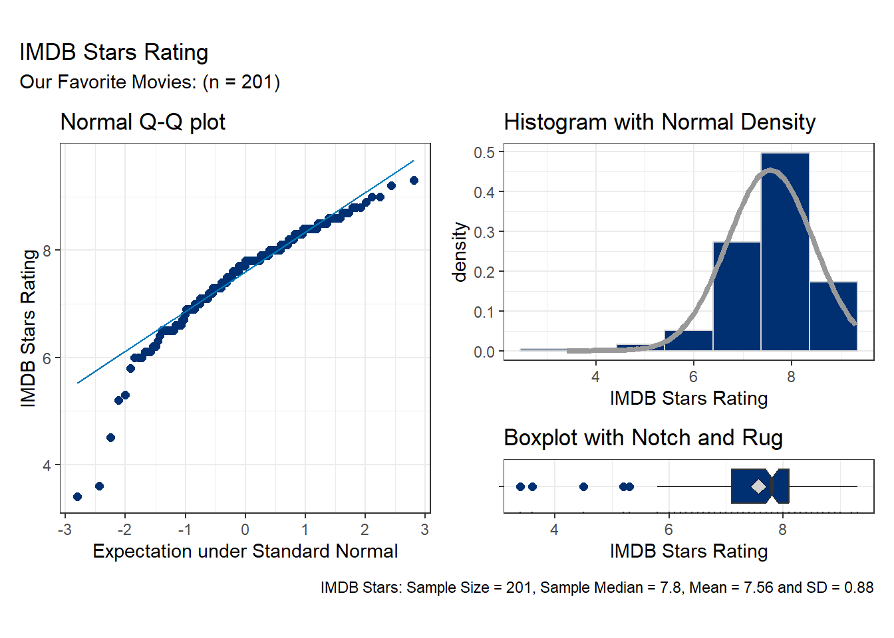
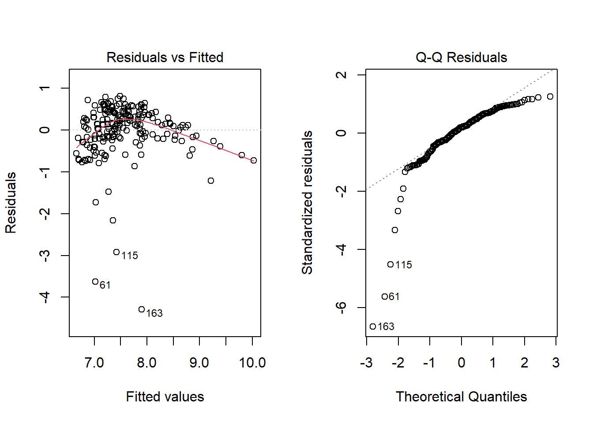

library(Hmisc)
library(janitor)
library(naniar)
library(xfun) ## or, if you prefer use library(sessioninfo)
library(googlesheets4)
library(gt)
library(gtExtras)
library(mosaic)
library(car) # for Box-Cox
library(broom)
library(patchwork)
library(tidyverse)
theme_set(theme_bw())
knitr::opts_chunk$set(comment = NA)Your Favorite Movies: Analysis 1
An Example for 431 Project A
1 R Packages
2 Data Ingest
gs4_deauth()
movies1 <-
read_sheet("https://docs.google.com/spreadsheets/d/1qJnQWSjXyOXFZOO8VZixpgZWbraUW66SfP5hE5bKW4k") |>
select(film_id, film, imdb_stars, imdb_pct10) |>
mutate(film_id = as.character(film_id))✔ Reading from "movies_2023-09-14".✔ Range 'Initial Data'.dim(movies1)[1] 201 43 CWRU Colors
I decided to show off here and make use of some of the 2023 official CWRU colors.
- Note that once I’ve named these in this way, based on their hexadecimal representations, I do not include quotes around them in ggplot-based plots.
## CWRU colors
cwru_blue <- '#003071'
cwru_darkblue <- '#09143A'
cwru_trueblue <- '#007AB8'
cwru_lightblue <- '#A6D2E6'
cwru_darkgray <- '#999999'
cwru_lightgray <- '#D3D3D3'
cwru_terracottaorange <- '#D63D1F'
cwru_fallyellow <- '#E69E40'
cwru_bluegreen <- '#377E72'
cwru_violetpurple <- '#692C95'
cwru_vividgreen <- '#61A530'4 An Important Message
I wrote this document to help you get a feel for what we are looking for in Analysis 1 for Project A, and to make the scope of that work a bit clearer.
Use your own words, not mine, in preparing your analytic work for Project A. Thanks.
5 Research Question
For movies in our sample of “favorite movies”, how strong is the relationship between the proprietary IMDB star rating and the percentage of IMDB reviewers who rated the movie 10?
6 Analysis
6.1 Variables
The two key variables we are studying in this analysis are quantitative, and we are interested in the association between them.
Our outcome is imdb_stars, which is a proprietary rating available for each film on IMDB, identified on a scale from 1 (lowest) to 10 (highest).
Our predictor is imdb_pct10, which is the percentage of user ratings, across the world, which rated the movie as a 10 on the 1-10 scale.
Each is identified in R a quantitative variable, and neither display any missing values within our sample, so we have a complete set of 201 movies.
What to do about missing data
In Project A, I would begin Analysis 1 by either filtering to complete cases or singly imputing any missing values. You should make a statement about what you are assuming about the missing data mechanism (either MCAR or MAR is reasonable - do not assume MNAR in Project A, no matter how compelling an argument might be) if you have missing values.
If you don’t have missing values in the variables used in this analysis, there is no reason to specify a missing data mechanism or do any filtering or imputation.
6.2 Summaries
6.2.1 Graphical Summaries of the Outcome-Predictor Association
Here is an initial plot of the data, before considering any transformations.
ggplot(movies1, aes(x = imdb_pct10, y = imdb_stars)) +
geom_point(col = "black") +
geom_smooth(method = "lm", col = cwru_trueblue, formula = y ~ x, se = TRUE) +
geom_smooth(method = "loess", col = cwru_darkblue, formula = y ~ x, se = FALSE) +
labs(x = "% of Ratings that are 10 out of 10", y = "IMDB Stars",
title = "Favorite Movies Sample for Fall 2023",
caption = str_glue("Pearson correlation = ",
round_half_up(cor(movies1$imdb_pct10,
movies1$imdb_stars), 3)),
subtitle = "% of 10s and Stars seem to move together")
The association between “% of 10s” and “star rating” appears to have a positive slope, and be fairly strong (with a Pearson correlation of 0.679. The loess smooth suggests there is some potential for non-linearity, and some of the films (especially those with relatively low star ratings) are poorly fit by the simple linear regression model shown in red above.
What I would show
In Project A, if you choose to use a transformation, I would show only two scatterplots in this section: the one of the raw outcome-predictor relationship, and the one with the transformation you choose to employ, rather than showing all possibilities as I have done here.
In Project A, if you choose not to use a transformation, I would again show only two scatterplots: the one of the raw outcome-predictor relationship, and the one transformation that you felt was best among those you considered. Do not show us all of the plots you fit.
Given the curve in the loess smooth, I attempted several transformations of the outcome. The most appealing transformation I found was to take the square of the outcome, shown in the lower right of the four plots below.
p1 <- ggplot(movies1, aes(x = imdb_pct10, y = imdb_stars)) +
geom_point() +
geom_smooth(method = "lm", col = cwru_trueblue, formula = y ~ x, se = FALSE) +
labs(title = "imdb_stars vs. imdb_pct10")
p2 <- ggplot(movies1, aes(x = imdb_pct10, y = log(imdb_stars))) +
geom_point() +
geom_smooth(method = "lm", col = cwru_trueblue, formula = y ~ x, se = FALSE) +
labs(title = "log(imdb_stars) vs. imdb_pct10")
p3 <- ggplot(movies1, aes(x = imdb_pct10, y = 1/imdb_stars)) +
geom_point() +
geom_smooth(method = "lm", col = cwru_trueblue, formula = y ~ x, se = FALSE) +
labs(title = "1/imdb_stars vs. imdb_pct10")
p4 <- ggplot(movies1, aes(x = imdb_pct10, y = imdb_stars^2)) +
geom_point() +
geom_smooth(method = "lm", col = cwru_trueblue, formula = y ~ x, se = FALSE) +
labs(title = "imdb_stars^2 vs. imdb_pct10")
(p1 + p2) / (p3 + p4)
I decided that the value of the square transformation of the outcome was pretty minimal in this setting, relative to the increased difficulty it created in interpreting the results, so I opted not to make a transformation.
Should I use / show the Box-Cox plot?
Basically, I would suggest that you use the Box-Cox plot to suggest a potential transformation of the outcome if you want to, but please do not feel obligated. If you use the plot to make your transformation decision, though, you should show it.
Note that the Box-Cox approach in this setting (as shown below) suggests trying the square of our outcome as a transformation, since the \(\lambda\) value near 2 maximizes the log-likelihood. That doesn’t mean I have to do it.
boxCox(movies1$imdb_stars ~ movies1$imdb_pct10)
Should I consider transforming the predictor as well?
Another approach I might have taken was to consider transforming both the outcome and the predictor. Were I to do that in Project A, I think I would restrict myself to using the same transformation on each variable, as shown below, but again, I would not display any of these transformations unless they were the transformation I chose to use, or they were the best transformation of the data (even though I decided not to use it)
Here are the plots I developed to consider a transformation of both the outcome and the predictor.
p5 <- ggplot(movies1, aes(x = imdb_pct10, y = imdb_stars)) +
geom_point() +
geom_smooth(method = "lm", col = cwru_terracottaorange,
formula = y ~ x, se = FALSE) +
labs(title = "imdb_stars vs. imdb_pct10")
p6 <- ggplot(movies1, aes(x = log(imdb_pct10), y = log(imdb_stars))) +
geom_point() +
geom_smooth(method = "lm", col = cwru_terracottaorange,
formula = y ~ x, se = FALSE) +
labs(title = "log(imdb_stars) vs. log(imdb_pct10)")
p7 <- ggplot(movies1, aes(x = 1/imdb_pct10, y = 1/imdb_stars)) +
geom_point() +
geom_smooth(method = "lm", col = cwru_terracottaorange,
formula = y ~ x, se = FALSE) +
labs(title = "1/imdb_stars vs. 1/imdb_pct10")
p8 <- ggplot(movies1, aes(x = imdb_pct10^2, y = imdb_stars^2)) +
geom_point() +
geom_smooth(method = "lm", col = cwru_terracottaorange,
formula = y ~ x, se = FALSE) +
labs(title = "imdb_stars^2 vs. imdb_pct10^2")
(p5 + p6) / (p7 + p8)
I see no real benefit from any of these transformations, so I will proceed to model the original outcome (imdb_stars) as a function of the original predictor (imdb_pct10.)
6.2.2 Graphical Summaries of the Outcome’s Distribution
Here are some plots of the sample distribution of the outcome I have selected, which is, of course, the raw imdb_stars variable. I would include any plots you find helpful in assessing whether a Normal distribution is a reasonable approximation for your outcome.
Note
Had I decided to use a transformation of the outcome, I would instead present plots of the transformed values.
## Normal Q-Q plot
p1 <- ggplot(movies1, aes(sample = imdb_stars)) +
geom_qq(col = cwru_blue, size = 2) + geom_qq_line(col = cwru_trueblue) +
theme(aspect.ratio = 1) +
labs(title = "Normal Q-Q plot",
y = "IMDB Stars Rating",
x = "Expectation under Standard Normal")
## Histogram with Normal density superimposed
p2 <- ggplot(movies1, aes(imdb_stars)) +
geom_histogram(aes(y = after_stat(density)),
bins = 7, fill = cwru_blue, col = cwru_lightgray) +
stat_function(fun = dnorm,
args = list(mean = mean(movies1$imdb_stars, na.rm = TRUE),
sd = sd(movies1$imdb_stars, na.rm = TRUE)),
col = cwru_darkgray, lwd = 1.5) +
labs(title = "Histogram with Normal Density",
x = "IMDB Stars Rating")
## Boxplot with notch and rug
p3 <- ggplot(movies1, aes(x = imdb_stars, y = "")) +
geom_boxplot(fill = cwru_blue, notch = TRUE,
outlier.color = cwru_blue, outlier.size = 2) +
stat_summary(fun = "mean", geom = "point",
shape = 23, size = 3, fill = cwru_lightgray) +
geom_rug(sides = "b") +
labs(title = "Boxplot with Notch and Rug",
x = "IMDB Stars Rating",
y = "")
p1 + (p2 / p3 + plot_layout(heights = c(4,1))) +
plot_annotation(title = "IMDB Stars Rating",
subtitle = str_glue("Our Favorite Movies: (n = ",
nrow(movies1), ")"),
caption = str_glue("IMDB Stars: Sample Size = ", nrow(movies1),
", Sample Median = ", round_half_up(median(movies1$imdb_stars),1),
", Mean = ", round_half_up(mean(movies1$imdb_stars),2),
" and SD = ", round_half_up(sd(movies1$imdb_stars),2)))
Several movies are identified here as low outliers. Here’s the set of films with the five lowest IMDB stars ratings in our sample.
movies1 |> arrange(imdb_stars) |> head(5)# A tibble: 5 × 4
film_id film imdb_stars imdb_pct10
<chr> <chr> <dbl> <dbl>
1 61 The Gingerdead Man 3.4 9.3
2 163 The Room 3.6 22.6
3 115 Madea Goes To Jail 4.5 15.4
4 78 High School Musical 2 5.2 14.4
5 83 House Party 2 5.3 9.46.2.3 Numerical Summaries
key1 <-
bind_rows(
favstats(~ imdb_stars, data = movies1),
favstats(~ imdb_pct10, data = movies1)) |>
mutate(variable = c("imdb_stars", "imdb_pct10")) |>
relocate(variable)
key1 |> gt() |> gt_theme_dark()| variable | min | Q1 | median | Q3 | max | mean | sd | n | missing |
|---|---|---|---|---|---|---|---|---|---|
| imdb_stars | 3.4 | 7.1 | 7.8 | 8.1 | 9.3 | 7.562687 | 0.8798015 | 201 | 0 |
| imdb_pct10 | 3.8 | 11.6 | 15.6 | 22.2 | 55.0 | 17.525373 | 9.0971646 | 201 | 0 |
Again, I’ll note that I have no missing values to deal with in this sample.
Note
Had I decided to use a transformation here, I would have summarized these transformed values, as well.
6.3 Approach
6.3.1 Fitted Model
Here is the main model I chose to fit, which is a linear regression predicting imdb_stars using imdb_pct10 across our sample of movies.
m1 <- lm(imdb_stars ~ imdb_pct10, data = movies1)
tidy(m1, conf.int = TRUE, conf.level = 0.90) |>
gt() |> fmt_number(columns = where(is.numeric), decimals = 3) |>
gt_theme_guardian()| term | estimate | std.error | statistic | p.value | conf.low | conf.high |
|---|---|---|---|---|---|---|
| (Intercept) | 6.411 | 0.099 | 64.578 | 0.000 | 6.247 | 6.575 |
| imdb_pct10 | 0.066 | 0.005 | 13.062 | 0.000 | 0.057 | 0.074 |
glance(m1) |> select(r.squared, sigma, nobs) |>
gt() |> fmt_number(columns = where(is.numeric), decimals = 3) |>
gt_theme_guardian()| r.squared | sigma | nobs |
|---|---|---|
| 0.462 | 0.647 | 201.000 |
The fitted model equation is imdb_stars = 6.411 + 0.066 imdb_pct10. We fit the model to all 201 observations, obtaining a model \(R^2\) value of 46.2% and a residual standard deviation of 0.647, as compared to the initial standard deviation of the imdb_stars values, which was 0.880, from our earlier numerical summaries.
6.3.2 Residual Analysis
par(mfrow=c(1,2)); plot(m1, which = 1:2); par(mfrow = c(1,1))
The residual plots are pretty disappointing. We have clear evidence of non-Normality in the Q-Q plot of the residuals, and some suggestion of a downward curve as the fitted values increase. So we are likely to have substantial problems with the assumptions of both linearity and Normality if we decide to use this model.
The three outlying movies identified in this analysis are the three films with the largest negative residuals from the model, and are listed below.
movies1_aug <- augment(m1, data = movies1)
movies1_aug |> slice(163, 61, 115) |>
select(film_id, film, imdb_stars, imdb_pct10, .fitted, .resid, .std.resid) |>
gt() |> gt_theme_guardian()| film_id | film | imdb_stars | imdb_pct10 | .fitted | .resid | .std.resid |
|---|---|---|---|---|---|---|
| 163 | The Room | 3.6 | 22.6 | 7.896122 | -4.296122 | -6.659935 |
| 61 | The Gingerdead Man | 3.4 | 9.3 | 7.022227 | -3.622227 | -5.622419 |
| 115 | Madea Goes To Jail | 4.5 | 15.4 | 7.423036 | -2.923036 | -4.528427 |
These are also the three movies with the smallest number of imdb_stars in the initial data.
6.4 Conclusions
Note
Here, I’m just repeating the relevant instructions from the Project A Analysis page.
Doing this work is, of course, a big part of your job.
For Analysis 1, you’ll write two paragraphs.
In the first paragraph, you should provide a clear restatement of your research question, followed by a clear and appropriate response to your research question, motivated by your results. Most of the time, one model won’t let you come to a strong conclusion about a question of interest, and it is your job to accurately present what information can be specified as a result of the model, without overstating your conclusions.
Then, write a paragraph which summarizes the key limitations of your work in Analysis 1.
- If you see problems with regression assumptions in your residual plot, that would be a good thing to talk about here, for instance.
- Another issue that is worth discussing is your target population, and what evidence you can describe that might indicate whether your selected states are a representative sample of the US as a whole, or perhaps some particular part of the United States.
- You should also provide at least one useful “next step” that you could take to improve this analysis (just saying “get more data” isn’t a sufficient next step.)
7 Session Information
session_info()R version 4.3.1 (2023-06-16 ucrt)
Platform: x86_64-w64-mingw32/x64 (64-bit)
Running under: Windows 11 x64 (build 22621)
Locale:
LC_COLLATE=English_United States.utf8
LC_CTYPE=English_United States.utf8
LC_MONETARY=English_United States.utf8
LC_NUMERIC=C
LC_TIME=English_United States.utf8
time zone: America/New_York
tzcode source: internal
Package version:
abind_1.4-5 askpass_1.2.0 backports_1.4.1
base64enc_0.1-3 bigD_0.2.0 bit_4.0.5
bit64_4.0.5 bitops_1.0.7 blob_1.2.4
boot_1.3.28.1 brio_1.1.3 broom_1.0.5
bslib_0.5.1 cachem_1.0.8 callr_3.7.3
car_3.1-2 carData_3.0-5 cellranger_1.1.0
checkmate_2.2.0 cli_3.6.1 clipr_0.8.0
cluster_2.1.4 colorspace_2.1-0 commonmark_1.9.0
compiler_4.3.1 conflicted_1.2.0 cpp11_0.4.6
crayon_1.5.2 curl_5.1.0 data.table_1.14.8
DBI_1.1.3 dbplyr_2.3.4 desc_1.4.2
diffobj_0.3.5 digest_0.6.33 dplyr_1.1.3
dtplyr_1.3.1 ellipsis_0.3.2 evaluate_0.22
fansi_1.0.5 farver_2.1.1 fastmap_1.1.1
fontawesome_0.5.2 forcats_1.0.0 foreign_0.8-84
Formula_1.2-5 fs_1.6.3 gargle_1.5.2
generics_0.1.3 ggforce_0.4.1 ggformula_0.10.4
ggplot2_3.4.4 ggridges_0.5.4 ggstance_0.3.6
glue_1.6.2 googledrive_2.1.1 googlesheets4_1.1.1
graphics_4.3.1 grDevices_4.3.1 grid_4.3.1
gridExtra_2.3 gt_0.10.0 gtable_0.3.4
gtExtras_0.5.0 haven_2.5.3 highr_0.10
Hmisc_5.1-1 hms_1.1.3 htmlTable_2.4.1
htmltools_0.5.6.1 htmlwidgets_1.6.2 httr_1.4.7
ids_1.0.1 isoband_0.2.7 janitor_2.2.0
jquerylib_0.1.4 jsonlite_1.8.7 juicyjuice_0.1.0
knitr_1.44 labeling_0.4.3 labelled_2.12.0
lattice_0.21-8 lifecycle_1.0.3 lme4_1.1.34
lubridate_1.9.3 magrittr_2.0.3 markdown_1.10
MASS_7.3-60 Matrix_1.6-1.1 MatrixModels_0.5.2
memoise_2.0.1 methods_4.3.1 mgcv_1.8-42
mime_0.12 minqa_1.2.6 modelr_0.1.11
mosaic_1.8.4.2 mosaicCore_0.9.2.1 mosaicData_0.20.3
munsell_0.5.0 naniar_1.0.0 nlme_3.1-162
nloptr_2.0.3 nnet_7.3-19 norm_1.0.11.1
numDeriv_2016.8.1.1 openssl_2.1.1 paletteer_1.5.0
parallel_4.3.1 patchwork_1.1.3 pbkrtest_0.5.2
pillar_1.9.0 pkgbuild_1.4.2 pkgconfig_2.0.3
pkgload_1.3.3 plyr_1.8.9 polyclip_1.10-6
praise_1.0.0 prettyunits_1.2.0 prismatic_1.1.1
processx_3.8.2 progress_1.2.2 ps_1.7.5
purrr_1.0.2 quantreg_5.97 R6_2.5.1
ragg_1.2.6 rappdirs_0.3.3 RColorBrewer_1.1.3
Rcpp_1.0.11 RcppEigen_0.3.3.9.3 reactable_0.4.4
reactR_0.5.0 readr_2.1.4 readxl_1.4.3
rematch_2.0.0 rematch2_2.1.2 reprex_2.0.2
rlang_1.1.1 rmarkdown_2.25 rpart_4.1.19
rprojroot_2.0.3 rstudioapi_0.15.0 rvest_1.0.3
sass_0.4.7 scales_1.2.1 selectr_0.4.2
snakecase_0.11.1 SparseM_1.81 splines_4.3.1
stats_4.3.1 stringi_1.7.12 stringr_1.5.0
survival_3.5.5 sys_3.4.2 systemfonts_1.0.5
testthat_3.2.0 textshaping_0.3.7 tibble_3.2.1
tidyr_1.3.0 tidyselect_1.2.0 tidyverse_2.0.0
timechange_0.2.0 tinytex_0.48 tools_4.3.1
tweenr_2.0.2 tzdb_0.4.0 UpSetR_1.4.0
utf8_1.2.3 utils_4.3.1 uuid_1.1.1
V8_4.4.0 vctrs_0.6.4 viridis_0.6.4
viridisLite_0.4.2 visdat_0.6.0 vroom_1.6.4
waldo_0.5.1 withr_2.5.1 xfun_0.40
xml2_1.3.5 yaml_2.3.7